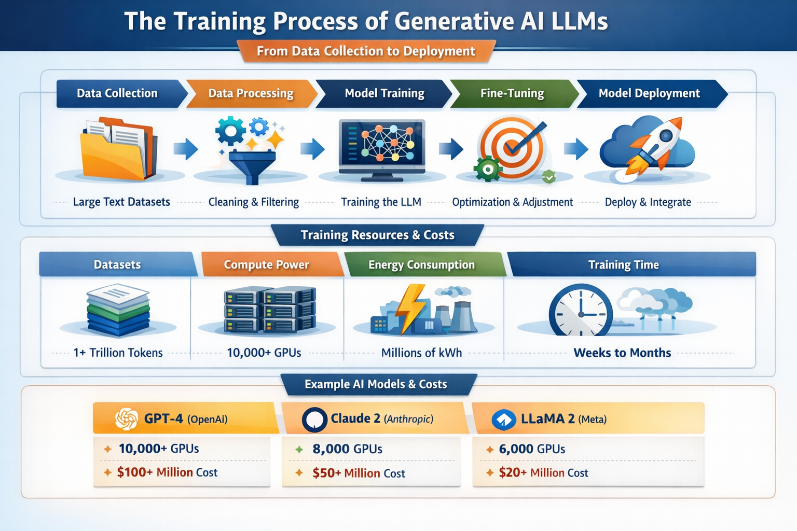

Workshop3
LLM training lifecycle infographic artifact.
Title
End-to-End LLM Training Pipeline Infographic

Description
The artifact is a clean, presentation-ready infographic that outlines the end-to-end
LLM training pipeline and supporting resources.
- Data Collection: Large-scale datasets (books, websites, code, articles) are gathered from diverse sources to ensure variety and depth.
- Data Processing: Data is cleaned, filtered, tokenized, and formatted to remove noise and bias.
- Model Training: Neural networks learn patterns in the data using GPUs/TPUs and optimization algorithms.
- Fine-Tuning: Models are refined using supervised learning and reinforcement learning from human feedback (RLHF).
- Model Deployment: The trained model is integrated into applications and made accessible via APIs or platforms.
The infographic uses icons, flow arrows, and segmented sections to visually separate
each stage, making complex processes easy to understand at a glance.
Resource Components Included
- Datasets: Trillions of tokens from diverse global sources.
- Compute Power: Thousands of GPUs/TPUs required for parallel processing.
- Energy Consumption: Millions of kWh consumed during training.
- Training Time: Ranges from weeks to months depending on model scale.
Examples of Generative AI Models
- GPT-4 (OpenAI): Estimated to use massive compute clusters and cost tens to hundreds of millions of dollars in training resources.
- Claude (Anthropic): Built with large-scale training infrastructure and aligned for safety and reliability.
- LLaMA (Meta): Open-weight model trained with comparatively efficient but still large-scale compute resources.
Objective
To clearly communicate the lifecycle of generative AI LLM training while emphasizing
the scale of resources required. The goal is to make complex technical concepts
understandable for a broad audience, while also demonstrating the relationship
between data, compute, time, and cost in model performance.
Process / Methodology
- Researched the training pipeline of generative AI models using academic and industry resources.
- Identified key stages: data collection, preprocessing, model training, fine-tuning, and deployment.
- Analyzed resource requirements such as compute infrastructure, dataset scale, energy usage, and time investment.
- Incorporated real-world examples of models (GPT-4, Claude, LLaMA) to contextualize resource usage.
- Designed the visual using structured sections, arrows for flow, and icons for clarity.
- Emphasized simplicity, readability, and visual hierarchy for effective communication.
Tools & Technologies Used
- AI-assisted graphic and infographic generation tools
- Microsoft PowerPoint / Google Slides for layout and presentation
- Research sources from AI/ML documentation and publications
- Design principles (color contrast, alignment, visual hierarchy)
Value Proposition
Unique Value: This artifact condenses a highly complex AI training
pipeline into a single, easy-to-understand visual representation. It bridges the gap
between technical detail and conceptual understanding.
Relevance to AI/ML Practice: It strengthens understanding of how large
language models are built, trained, and deployed while reinforcing the importance of
data quality, compute resources, and optimization strategies. This insight is valuable
for both technical and non-technical stakeholders in AI/ML projects.
References
- OpenAI technical reports and publications on GPT models
- Anthropic documentation and research on Claude
- Meta AI research on LLaMA models
- General AI/ML course materials and lectures on deep learning and large-scale model training
- Industry insights on GPU usage, energy consumption, and training costs